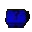

... default (player ownz the ToyBox)
... default (player ownz the ToyBox)1 ... player 2's 'team' ownz the ToyBox
2  ... player 3's 'team' ownz the ToyBox
3 ... player 4's 'team' ownz the ToyBox
In the Gruntz Level Editor, the color of the Toybox will always be Green, without regard to which team actually 'owns' the ToyBox.
In a Quest Custom Level, use Score:=1, 2 or 3 to cause your own Grunt to play with the Toy.
See Gamer's Custom Level Bombz Away! for an interesting use of this possibility.
Thus, a Spy Gear
 Grunt would be used to allow any of your own Gruntz to pick up the ToyBox, without having to play with the Toy that is in it.
Grunt would be used to allow any of your own Gruntz to pick up the ToyBox, without having to play with the Toy that is in it.